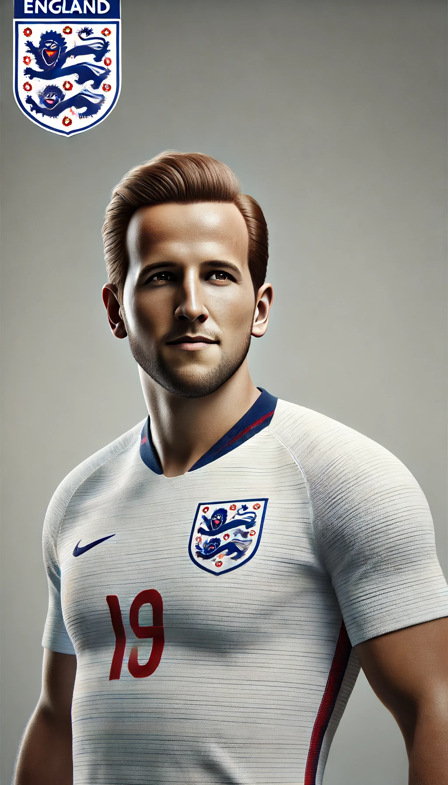
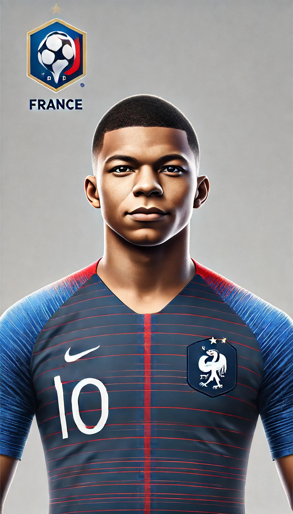
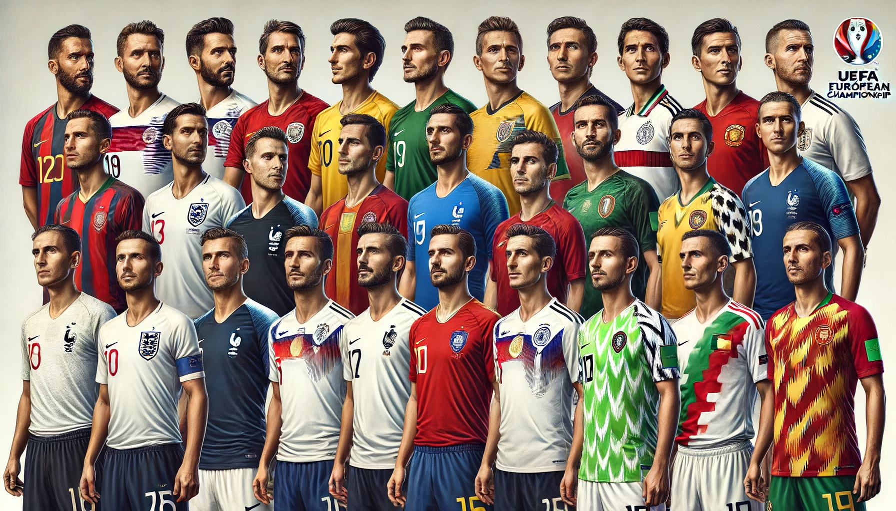

Players to Watch at Euro 2024
Euro 2024 is set to be a spectacular showcase of football talent, with both seasoned veterans and emerging stars ready to light up the tournament. Here's a look at some of the key players expected to make a significant impact:
Luka Modric (Croatia)
The veteran midfielder continues to be a pivotal player for Croatia, bringing experience and skill to the team.
Nicolo Barella (Italy)
After a stellar season with Inter Milan, Barella is expected to be a key figure in Italy's midfield.
Josko Gvardiol (Croatia)
The young defender, known for his tactical acumen, is one to watch as he continues to develop under Pep Guardiola at Manchester City.
Harry Kane (England)
The prolific striker remains England's main threat up front, with his goal-scoring prowess being crucial for the team's success.
Kevin De Bruyne (Belgium)
Known for his creativity and vision, De Bruyne will be the linchpin in Belgium's midfield, orchestrating play and setting up goals.
Kylian Mbappe (France)
The French forward is one of the most exciting talents in world football, with his speed and finishing ability making him a constant danger to defenses.
Cristiano Ronaldo (Portugal)
Despite his age, Ronaldo continues to be a key player for Portugal, bringing experience, leadership, and goal-scoring ability to the team.
Robert Lewandowski (Poland)
As one of the top strikers in the world, Lewandowski's goal-scoring will be vital for Poland's chances in the tournament.
Phil Foden (England)
The Manchester City midfielder's dribbling skills and creativity make him a crucial asset for England.
Jude Bellingham (England)
Known for his versatility and maturity beyond his years, Bellingham will play a significant role in England's midfield.
Bukayo Saka (England)
Saka's pace and ability to play on both flanks make him a dynamic option for England's attack.
Lamine Yamal (Spain)
The young Spanish prodigy is set to make a big impact with his technical skills and creativity.
Romelu Lukaku (Belgium)
Having had his best club season for goals in three years, Lukaku will be pivotal for Belgium, needing to score plenty to help his team advance.
Toni Kroos (Germany)
Returning from international retirement, Kroos brings a calming influence and precise passing to Germany's midfield, which will be crucial for the host nation's success.
Joshua Kimmich (Germany)
Known for his versatility, Kimmich's contributions in both defense and midfield will be essential for Germany as they leverage their home advantage.
Pedri (Spain)
The young midfielder's composure and game-reading ability make him a key player for Spain, potentially dictating the team's success.
Federico Chiesa (Italy)
With explosive pace and dribbling skills, Chiesa will be critical in Italy's offensive efforts as they aim to make a statement after missing out on the 2022 World Cup.
Virgil van Dijk (Netherlands)
The Dutch defender's presence and leadership at the back are vital for the Netherlands' defense, making him a crucial player to watch.
Florian Wirtz (Germany)
The young attacking midfielder from Bayer Leverkusen is known for his creativity and goal-scoring abilities, making him a player to watch in the tournament.
Gianluigi Donnarumma (Italy)
As the top-performing goalkeeper in Europe's top leagues, Donnarumma will be key to Italy's defense, especially without the veteran duo of Bonucci and Chiellini.
Dominik Szoboszlai (Hungary)
Hungary's captain and key playmaker, Szoboszlai's performance will be critical if Hungary is to make an impact in the tournament.
Conclusion
These players represent just a fraction of the talent set to grace Euro 2024. Their performances will be closely watched as they strive to lead their nations to glory on the grand stage of European football.
